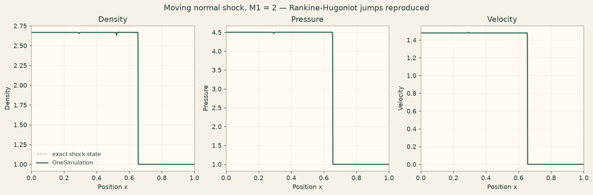

Docs › Examples › Normal shock and the Rankine-Hugoniot relations
Compressible flow · 1D
Normal shock and the Rankine-Hugoniot relations
A normal shock in a compressible gas, graded against the Rankine-Hugoniot relations.

What it computes
OneSimulation evolves the compressible Euler equations with a high-resolution scheme and reads the jump across the shock front.
What it checks
The density, pressure and velocity jumps and the shock speed match the Rankine-Hugoniot relations within about 1 %. This is a compute-heavy run.
The notebook
The complete notebook, cell by cell. Run it to produce the figures and the comparison printout.
A normal shock travels at constant speed \(S\) into quiescent gas. In the frame of the shock the flow is steady, and the states ahead (1) and behind (2) the front are tied together by the Rankine-Hugoniot relations. For a shock moving into gas at rest, with shock Mach number \(M_1 = S/a_1\) (where \(a_1=\sqrt{\gamma p_1/\rho_1}\) is the upstream sound speed), the exact jumps are
We build the exact single-shock initial data for a chosen \(M_1\), let OneSimulation transport the discontinuity with a WENO5 + RK4 compressible-Euler solver, and then read the plateau states on either side of the front. Their ratios must reproduce the closed-form relations above, and the measured front speed must match \(S\).
from importlib.metadata import version
import matplotlib.pyplot as plt
import numpy as np
from onesim.cad.d1 import Line
from onesim.meshing import StructuredLineMesher
from onesim.numerics import Numerics
from onesim.numerics.fdm import (
FiniteDifference, GlobalLaxFriedrichsSplit, WENO5Flux, WENOFluxDifference,
)
from onesim.numerics.time import ClassicalRungeKutta4, TimeStepLimits
from onesim.physics.hydrodynamics import (
CompressibleEuler, IdealGasEquationOfState, TransmissiveBoundary,
)
from onesim.simulation import Problem, Simulation
from onesim.simulation.initial_conditions import InitialValue
print("OneSimulation:", version("onesimulation"))Parameters and the exact shock state
The upstream gas (region 1) is at rest with unit density and pressure. The shock Mach number \(M_1\) and \(\gamma\) fully determine the shocked state (region 2) through the Rankine-Hugoniot relations. The shock starts at \(x_0\) and moves in the \(+x\) direction; it is stopped well before it reaches the open end.
gamma = 1.4
M1 = 2.0 # shock Mach number S / a1
rho1, p1, u1 = 1.0, 1.0, 0.0
a1 = np.sqrt(gamma * p1 / rho1)
S = M1 * a1 # shock speed in the laboratory frame
# Exact Rankine-Hugoniot post-shock state (gas initially at rest).
pressure_ratio = (2 * gamma * M1**2 - (gamma - 1)) / (gamma + 1)
density_ratio = ((gamma + 1) * M1**2) / ((gamma - 1) * M1**2 + 2)
p2 = p1 * pressure_ratio
rho2 = rho1 * density_ratio
u2 = (2 * a1 / (gamma + 1)) * (M1 - 1.0 / M1)
print(f"a1 = {a1:.4f}, shock speed S = {S:.4f}")
print(f"exact ratios: p2/p1 = {pressure_ratio:.4f}, rho2/rho1 = {density_ratio:.4f}, u2 = {u2:.4f}")
x0 = 0.30 # initial shock position
end_time = 0.15 # stops the front near x = 0.30 + S*end_time (< 0.9)
DT = 2.0e-5
POINTS = 2000Model and the actual computation
The conserved fields are initialised from the two exact states: behind the front (x < x0) the shocked state (rho2, p2, u2), ahead of it the quiescent state (rho1, p1, 0). The total energy density is \(E=p/(\gamma-1)+\tfrac12\rho u^2\). Both ends are transmissive so the plateaus stay undisturbed while the shock travels. A CFL limit guards the time step.
def total_energy(pressure, density, velocity):
return pressure / (gamma - 1) + 0.5 * density * velocity**2
geometry = Line(start=(0.0, 0.0, 0.0), end=(1.0, 0.0, 0.0))
gas = CompressibleEuler(
domain=geometry.line, equation_of_state=IdealGasEquationOfState(gamma=gamma),
)
problem = Problem(
name="Moving normal shock",
geometry=geometry,
physics=(gas,),
initial_conditions=(
InitialValue(gas.density, lambda x: np.where(x < x0, rho2, rho1)),
InitialValue(gas.momentum, lambda x: np.where(x < x0, rho2 * u2, rho1 * u1)),
InitialValue(
gas.total_energy,
lambda x: np.where(
x < x0, total_energy(p2, rho2, u2), total_energy(p1, rho1, u1)
),
),
),
boundary_conditions=(
TransmissiveBoundary(physics=gas, boundary=geometry.boundaries.all),
),
)
mesh = StructuredLineMesher(cells=POINTS).generate(geometry)
numerics = Numerics(
spatial=FiniteDifference(gradient=WENOFluxDifference(
flux_splitting=GlobalLaxFriedrichsSplit(), reconstruction=WENO5Flux(),
)),
time_integrator=ClassicalRungeKutta4(),
step_limits=TimeStepLimits(cfl_limit=0.4, stability_safety_factor=0.4),
)
simulation = Simulation(problem=problem, mesh=mesh, numerics=numerics)
simulation.validate().require_valid()
result = simulation.run(start_time=0.0, end_time=end_time, time_step=DT)Reading the plateaus and checking the jump ratios
The computed fields are read off well to the left (shocked) and to the right (quiescent) of the smeared front, where the solution is still exactly the initial state. The density, pressure and velocity jumps are compared with the Rankine-Hugoniot relations; the front position (half-density crossing) gives the measured shock speed.
x = np.asarray(mesh.cell_centers[:, 0])
rho = np.asarray(result.field(gas.density).values)
pressure = np.asarray(result.field(gas.pressure).values)
velocity = np.asarray(result.field(gas.velocity).values)
assert np.isfinite([rho, pressure, velocity]).all()
assert rho.min() > 0 and pressure.min() > 0
front = x0 + S * end_time
left = (x > 0.05) & (x < front - 0.08) # shocked plateau
right = (x > front + 0.08) & (x < 0.95) # quiescent plateau
num_rho2, num_rho1 = rho[left].mean(), rho[right].mean()
num_p2, num_p1 = pressure[left].mean(), pressure[right].mean()
num_u2, num_u1 = velocity[left].mean(), velocity[right].mean()
num_density_ratio = num_rho2 / num_rho1
num_pressure_ratio = num_p2 / num_p1
print("jump ratios (numeric vs. Rankine-Hugoniot):")
print(f" rho2/rho1 : {num_density_ratio:.4f} vs {density_ratio:.4f}")
print(f" p2/p1 : {num_pressure_ratio:.4f} vs {pressure_ratio:.4f}")
print(f" u2 : {num_u2:.4f} vs {u2:.4f} (ahead: {num_u1:.4e})")
# Shock speed from the half-density crossing of the front.
mid = 0.5 * (rho1 + rho2)
crossing = np.where((rho[:-1] - mid) * (rho[1:] - mid) < 0)[0]
front_x = x[crossing[np.argmax(np.abs(np.diff(rho))[crossing])]]
measured_speed = (front_x - x0) / end_time
print(f" shock speed: {measured_speed:.4f} vs {S:.4f}")
# The upstream plateau (ahead of the shock) must stay at rest.
assert abs(num_u1) < 5e-3, "The gas ahead of the shock should remain at rest."
# Jump ratios reproduce Rankine-Hugoniot within the discretisation error.
assert abs(num_density_ratio - density_ratio) / density_ratio < 0.01
assert abs(num_pressure_ratio - pressure_ratio) / pressure_ratio < 0.01
assert abs(num_u2 - u2) / u2 < 0.01
assert abs(measured_speed - S) / S < 0.02
print("All Rankine-Hugoniot checks passed.")Figure
cream = "#fbf5eb"
fig, axes = plt.subplots(1, 3, figsize=(13, 4.2), constrained_layout=True)
fig.patch.set_facecolor(cream)
exact = {
"Density": np.where(x < front, rho2, rho1),
"Pressure": np.where(x < front, p2, p1),
"Velocity": np.where(x < front, u2, u1),
}
numeric = {"Density": rho, "Pressure": pressure, "Velocity": velocity}
for ax, name in zip(axes, exact):
ax.set_facecolor("#fffaf2")
ax.plot(x, exact[name], color="#b4aa98", lw=1.1, ls="--", label="exact shock state")
ax.plot(x, numeric[name], color="#39715e", lw=1.8, label="OneSimulation")
ax.set(xlabel="Position x", ylabel=name, xlim=(0, 1), title=name)
ax.grid(alpha=0.25)
axes[0].legend(frameon=False, fontsize=9)
fig.suptitle(f"Moving normal shock, M1 = {M1:g} — Rankine-Hugoniot jumps reproduced")
plt.show()Going further
Change M1 or gamma and the exact post-shock state, the plateau values and the front speed all move together, still obeying the Rankine-Hugoniot relations. Refine POINTS to sharpen the front; the plateau ratios already match to well under a percent because, away from the front, the solution is the exact translating-shock state.